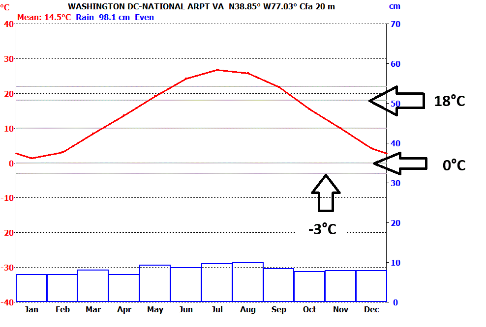

 |
Note that there are solid liht gray lines on the graph at the key temperatures
for the classification.
Steps:
- Determine if you think it is a desert or a steppe. The
amount of rain required to avoid being an arid climate depends on
the temperature--the hotter the temperatures the more water will be
lost to evaporation, requiring more rain for vegetation, and its
distribution throughout the year. In general a steppe will
have less that about 75 cm of annual rain, and a desert less than 25
cm.
- Check if the average temperature for all months is > 18 C.
If so, an A climate.
- Check if at least one month has an average temperature below 0 C
(US standard), or -3 C (European standard). If so, it is a D
climate
- If it looks really cold and miserable, you might have an E
climate.
- If none of the above, it is a cool C climate (at least one month
below 18 C, and no months belew 0 or -3C.
|